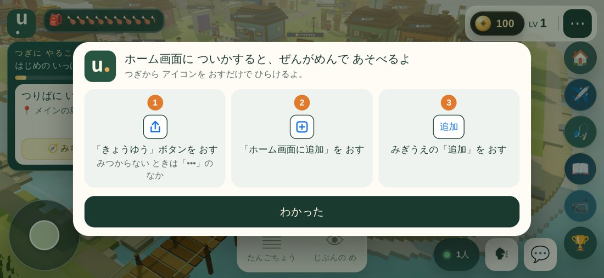
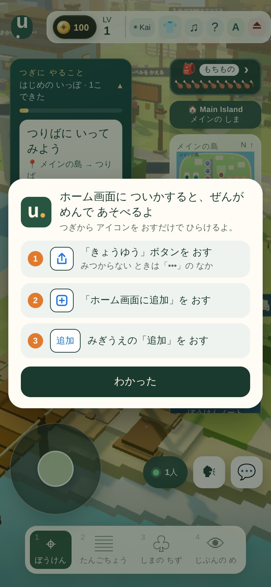
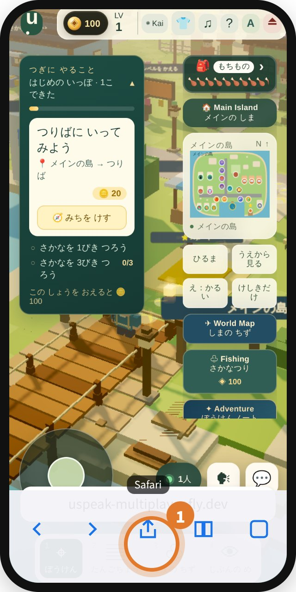
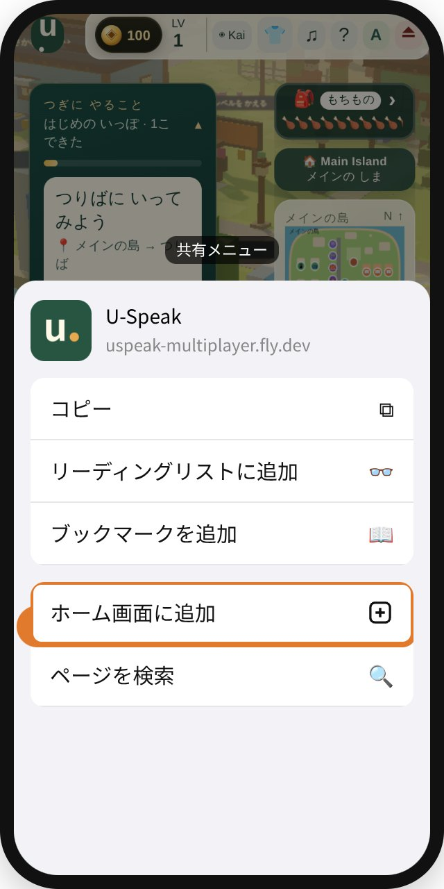
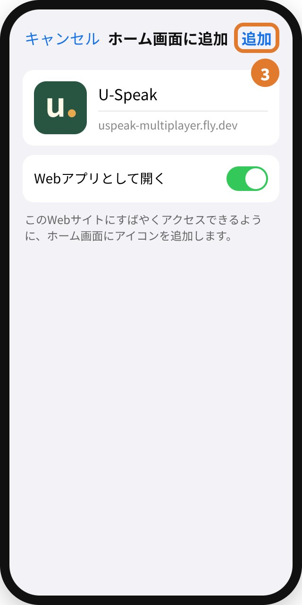
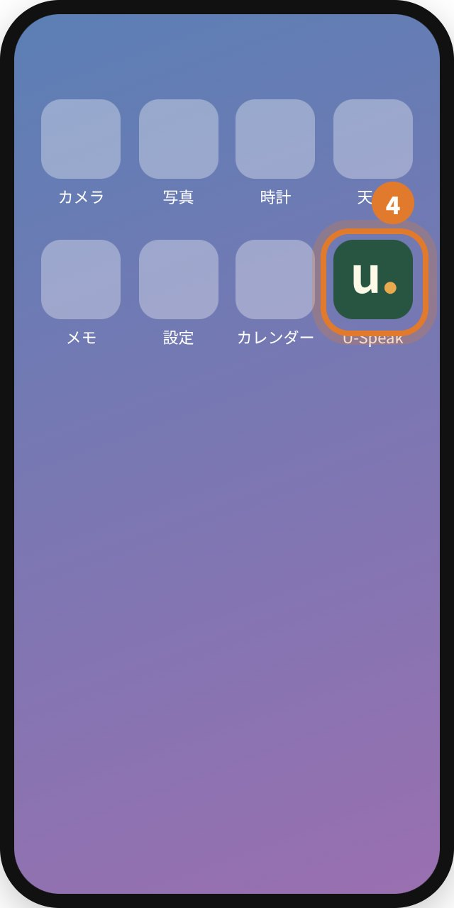

iPhone で U-Speak を全画面で遊ぶ
保護者・教室の方向け ｜ アプリのダウンロードは不要です
iPhone のブラウザ（Safari・Chrome）では、画面の上下にブラウザのバーが残ります。これは Apple の仕様で、ページの側からは消せません。
ホーム画面に U-Speak を追加すると、バーのない全画面で開けるようになります。追加は最初の1回だけで、その後はアイコンを押すだけです。
お子さまの画面に出る案内
iPhone のブラウザで遊んでいると、島に入って少ししてから1回だけ、この案内が出ます。「わかった」を押すと閉じて、二度と出ません。


iPad・Android・パソコン、すでにホーム画面のアイコンから開いているときは出ません。
ホーム画面に追加する（1分）

1共有ボタン
Safari は画面の下（または上）の 共有ボタン（四角から上向きの矢印）を押します。見当たらないときは ••• の中の 共有。

2ホーム画面に追加
出てきたメニューを下へスクロールして ホーム画面に追加 を押します。

3追加
名前が「U-Speak」になっていることを確かめて、右上の 追加。「Webアプリとして開く」が出たらオンのままにします。

4アイコンから開く
ホーム画面に緑の u. が出ます。次からはこのアイコンから開いてください。
合同会社 U-Speak Lab ｜ 手順の画面はイメージです（iOS・ブラウザの版で少しちがいます）1 / 2